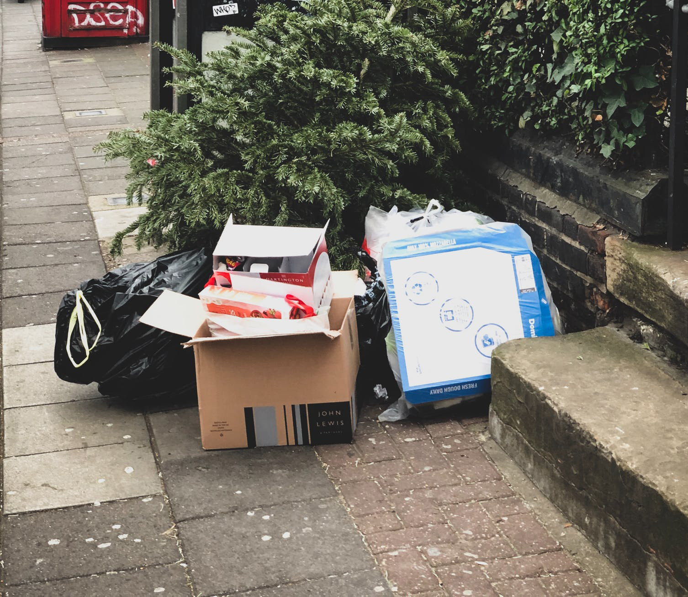

You walk over to the pile of trash bags and start to use your claws to open up one of the ones on the edge of the pile. As you tear it open, you see a cat jump out of fear out of the corner of your eye before exclaiming "OH WOW, we got company!" You turn to look at the pile and slowly see cat heads raising out of it and realize there are a lot of eyes on you right now. You're feeling pretty intimidated and aren't sure whether you should try to be cool or take your bag and run.